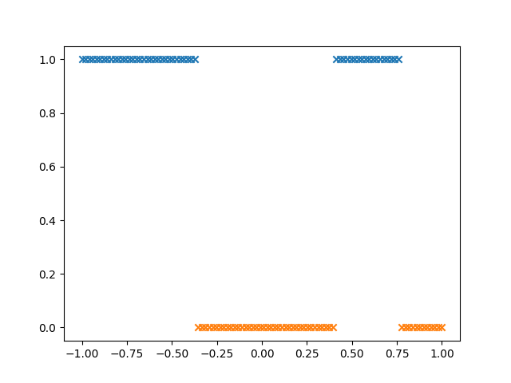
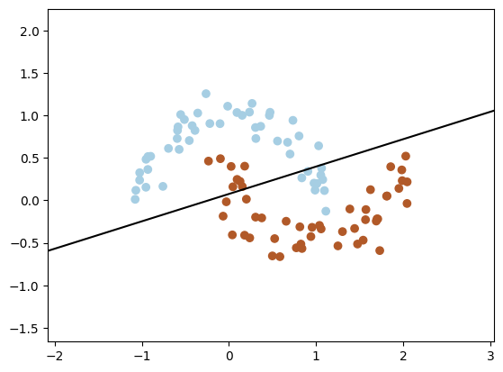
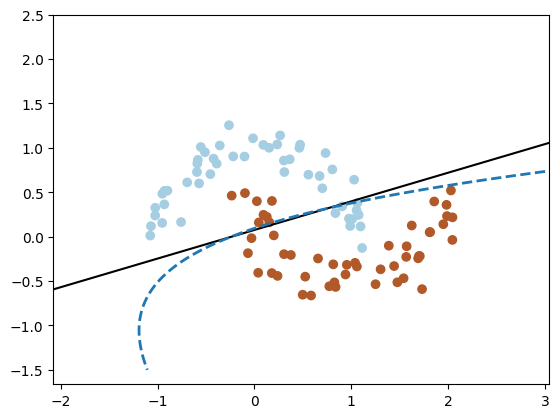
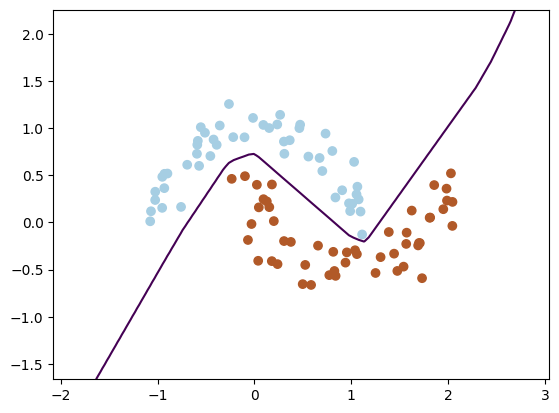
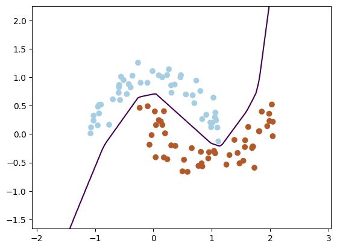
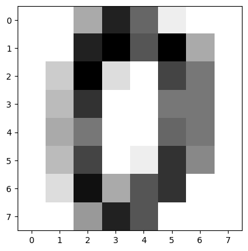
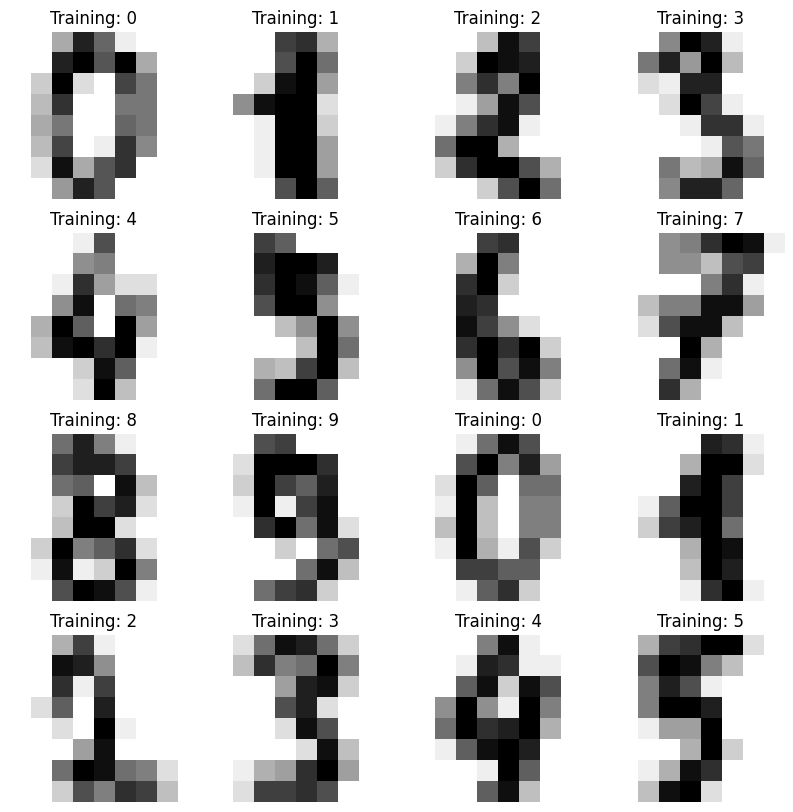

非线性分类
Contents
统计与大数据分析
机器学习4: 神经网络
肖朦，2023
非线性分类#
Logistic的二元和多元分类基础：对输入（特征）进行线性变换，再取Sigmoid或Softmax函数
可以处理边界为特征值的多项式和的形式
若边界无法表达为各输入的有限多项式和？
一维举例#
import numpy as np
import matplotlib.pyplot as plt
from scipy.special import expit
### x的线性变换
### w[0][0]+w[1][0]*x = z1
### w[0][1]+w[1][1]*x = z2
### w[0][2]+w[1][2]*x = z3
### w[0][3]+w[1][3]*x = z4
w=[[-2.5,0.5,-2,2.5],[1,-2,5,-3]]
x=np.linspace(-1,1,100)
x_c=np.vstack((np.ones(100),x)).T
trans=x_c@w
### sigmoid(zi)
ns=4
for i in range(ns):
plt.scatter(x,expit(trans[:,i]))
### z=sigmoid(z1)+sigmoid(z2)+sigmoid(z3)
middle=np.sum(expit(trans),axis=1)
out=(middle-np.mean(middle))/np.std(middle)
### y = sigmoid(z)
plt.plot(x,expit(out))
plt.plot(x,expit(out)>0.5)
[<matplotlib.lines.Line2D at 0x15bc5b220>]
非线性边界#
对输入作线性变换，个数可以是任意多个
\[ W_1 X = Z_1 \]
\[ W_2 X = Z_2 \]
\[ W_3 X = Z_3 \]
对中间值\(Z_i\)取Sigmoid(Logistic)函数
\[ g(Z_1), g(Z_2), g(Z_3)\]
对 \(g(Z_i)\)继续作线性操作
\[ W'_1 g(Z) = Z' \]
对Z’取Sigmoid (Softmax)函数
\[ f(Z') = y \]

神经网络算法#
通过多层的迭代，进行多类别分类
输入层(Input layer)：输入特征值
隐藏层(Hidden layer)：中间步骤，输入层的线性函数
激活函数(Activation function): 隐藏层得到前一步的线性函数后，进行转换（Logistic, ReLU…）
输出层(Output layer): 最后一步的隐藏层的Softmax函数

激活函数#
常用：Logistic, ReLU(Rectified Linear Unit)
ReLU定义
\[ f(x) = max(0,x)\]
ReLU比logistic更常用，因为导数非0的范围更大
def relu(x):
return x*(x>0)
x=np.linspace(-5,5,100)
plt.plot(x,relu(x))
[<matplotlib.lines.Line2D at 0x15bd50a00>]
神经网络求解#
代价函数：常用最小二乘法，极大似然法
求解每层之间的线性系数：常用阶梯下降法，从后往前递推，因此激活函数的导数性质很重要
神经网络运用, ReLU#
from sklearn.datasets import make_moons
X, y = make_moons(n_samples=100, noise=0.13, random_state=25)
fig = plt.figure()
plt.scatter(X[:,0],X[:,1],c=y,cmap="Paired")
<matplotlib.collections.PathCollection at 0x162f1b400>
from sklearn.inspection import DecisionBoundaryDisplay
from sklearn.linear_model import LogisticRegression
ax=fig.gca()
clf=LogisticRegression()
clf.fit(X,y)
DecisionBoundaryDisplay.from_estimator(
clf, X, plot_method="contour",levels=[0],ax=ax,colors="k"
)
fig

from sklearn.preprocessing import PolynomialFeatures
poly = PolynomialFeatures(degree = 2, interaction_only=False, include_bias=False)
X_poly = poly.fit_transform(X)
clf.fit(X_poly,y)
ax=fig.gca()
xx, yy = np.meshgrid(np.linspace(-2, 3, 100), np.linspace(-1.5, 2.5, 100))
mg=np.c_[xx.ravel(), yy.ravel()]
xx_poly = poly.fit_transform(mg)
Z = clf.decision_function(xx_poly)
ax.contour(xx, yy, Z.reshape(100,100), levels=[0], colors="C0",linewidths=2, linestyles="dashed")
fig

from sklearn.neural_network import MLPClassifier
mlp = MLPClassifier(hidden_layer_sizes=(25,),activation='relu',
learning_rate_init=0.1,random_state=10,
verbose=True) #
mlp.fit(X,y)
Iteration 1, loss = 0.76818381
Iteration 2, loss = 0.60584906
Iteration 3, loss = 0.49673954
Iteration 4, loss = 0.43098530
Iteration 5, loss = 0.39536770
Iteration 6, loss = 0.36425286
Iteration 7, loss = 0.33220420
Iteration 8, loss = 0.30102878
Iteration 9, loss = 0.27230428
Iteration 10, loss = 0.25153283
Iteration 11, loss = 0.23999144
Iteration 12, loss = 0.23692507
Iteration 13, loss = 0.23235293
Iteration 14, loss = 0.22063738
Iteration 15, loss = 0.20312114
Iteration 16, loss = 0.18633827
Iteration 17, loss = 0.17200459
Iteration 18, loss = 0.15918274
Iteration 19, loss = 0.14636725
Iteration 20, loss = 0.13212116
Iteration 21, loss = 0.11758883
Iteration 22, loss = 0.10521366
Iteration 23, loss = 0.09759704
Iteration 24, loss = 0.09370972
Iteration 25, loss = 0.08938578
Iteration 26, loss = 0.08302627
Iteration 27, loss = 0.07561811
Iteration 28, loss = 0.06897391
Iteration 29, loss = 0.06279666
Iteration 30, loss = 0.05627500
Iteration 31, loss = 0.04964599
Iteration 32, loss = 0.04544851
Iteration 33, loss = 0.04255489
Iteration 34, loss = 0.03984851
Iteration 35, loss = 0.03696504
Iteration 36, loss = 0.03362931
Iteration 37, loss = 0.03016045
Iteration 38, loss = 0.02700896
Iteration 39, loss = 0.02534686
Iteration 40, loss = 0.02447124
Iteration 41, loss = 0.02351388
Iteration 42, loss = 0.02235480
Iteration 43, loss = 0.02082668
Iteration 44, loss = 0.01914319
Iteration 45, loss = 0.01757133
Iteration 46, loss = 0.01633787
Iteration 47, loss = 0.01581351
Iteration 48, loss = 0.01521033
Iteration 49, loss = 0.01453245
Iteration 50, loss = 0.01386902
Iteration 51, loss = 0.01328033
Iteration 52, loss = 0.01268138
Iteration 53, loss = 0.01209476
Iteration 54, loss = 0.01144348
Iteration 55, loss = 0.01079904
Iteration 56, loss = 0.01051484
Iteration 57, loss = 0.01030241
Iteration 58, loss = 0.01004473
Iteration 59, loss = 0.00965538
Iteration 60, loss = 0.00922886
Iteration 61, loss = 0.00891484
Iteration 62, loss = 0.00862422
Iteration 63, loss = 0.00829470
Iteration 64, loss = 0.00816432
Iteration 65, loss = 0.00790829
Iteration 66, loss = 0.00769956
Iteration 67, loss = 0.00765830
Iteration 68, loss = 0.00749589
Iteration 69, loss = 0.00719389
Iteration 70, loss = 0.00681599
Iteration 71, loss = 0.00683469
Iteration 72, loss = 0.00686925
Iteration 73, loss = 0.00678343
Iteration 74, loss = 0.00656770
Iteration 75, loss = 0.00635654
Iteration 76, loss = 0.00612555
Iteration 77, loss = 0.00602297
Iteration 78, loss = 0.00601955
Iteration 79, loss = 0.00587338
Iteration 80, loss = 0.00574030
Iteration 81, loss = 0.00562017
Iteration 82, loss = 0.00547769
Iteration 83, loss = 0.00545940
Iteration 84, loss = 0.00539925
Iteration 85, loss = 0.00542219
Iteration 86, loss = 0.00528219
Iteration 87, loss = 0.00510965
Iteration 88, loss = 0.00502678
Iteration 89, loss = 0.00496840
Iteration 90, loss = 0.00496330
Iteration 91, loss = 0.00493238
Iteration 92, loss = 0.00480959
Iteration 93, loss = 0.00468165
Iteration 94, loss = 0.00455602
Iteration 95, loss = 0.00453155
Iteration 96, loss = 0.00447812
Iteration 97, loss = 0.00441988
Iteration 98, loss = 0.00433673
Iteration 99, loss = 0.00425331
Iteration 100, loss = 0.00420543
Iteration 101, loss = 0.00412412
Iteration 102, loss = 0.00408203
Iteration 103, loss = 0.00402789
Iteration 104, loss = 0.00398785
Iteration 105, loss = 0.00391617
Training loss did not improve more than tol=0.000100 for 10 consecutive epochs. Stopping.
MLPClassifier(hidden_layer_sizes=(25,), learning_rate_init=0.1, random_state=10,
verbose=True)In a Jupyter environment, please rerun this cell to show the HTML representation or trust the notebook. On GitHub, the HTML representation is unable to render, please try loading this page with nbviewer.org.
MLPClassifier(hidden_layer_sizes=(25,), learning_rate_init=0.1, random_state=10,
verbose=True)disp=DecisionBoundaryDisplay.from_estimator(
mlp, X ,plot_method='contour',levels=[0.5]
)
#plt.colorbar(disp.ax_.collections[1])
ax=plt.scatter(X[:,0],X[:,1],c=y,cmap="Paired")

[coef.shape for coef in mlp.coefs_]
[(2, 25), (25, 1)]
[coef.shape for coef in mlp.intercepts_]
[(25,), (1,)]
coef=mlp.coefs_
bias=mlp.intercepts_
X_hidden_2d=mg@coef[0]+bias[0]
print(X_hidden_2d.shape)
fig,ax =plt.subplots(5,5,figsize=(10,10))
for i in range(25):
ax[int(i/5)][i%5].set_axis_off()
ax[int(i/5)][i%5].contourf(xx,yy,relu(X_hidden_2d[:,i]).reshape(100,100),cmap="Blues")
(10000, 25)
y_out=relu(X_hidden_2d)@coef[1]+bias[1]
plt.contourf(xx,yy,y_out.reshape(100,100),cmap="Blues")
plt.colorbar()
<matplotlib.colorbar.Colorbar at 0x16487a640>

mlp = MLPClassifier(hidden_layer_sizes=(24,),activation='relu',
learning_rate_init=0.1,
verbose=True) #
mlp.fit(X,y)
Iteration 1, loss = 0.64661435
Iteration 2, loss = 0.53164415
Iteration 3, loss = 0.46636876
Iteration 4, loss = 0.41760238
Iteration 5, loss = 0.37334789
Iteration 6, loss = 0.34476908
Iteration 7, loss = 0.32257352
Iteration 8, loss = 0.29501275
Iteration 9, loss = 0.27154291
Iteration 10, loss = 0.25618538
Iteration 11, loss = 0.24737375
Iteration 12, loss = 0.24056560
Iteration 13, loss = 0.23267607
Iteration 14, loss = 0.22329300
Iteration 15, loss = 0.21369106
Iteration 16, loss = 0.20463688
Iteration 17, loss = 0.19313241
Iteration 18, loss = 0.17805269
Iteration 19, loss = 0.16245471
Iteration 20, loss = 0.14794357
Iteration 21, loss = 0.13354143
Iteration 22, loss = 0.12163931
Iteration 23, loss = 0.11155423
Iteration 24, loss = 0.10283436
Iteration 25, loss = 0.09693486
Iteration 26, loss = 0.09068360
Iteration 27, loss = 0.08298362
Iteration 28, loss = 0.07647330
Iteration 29, loss = 0.07042179
Iteration 30, loss = 0.06385546
Iteration 31, loss = 0.05793649
Iteration 32, loss = 0.05315089
Iteration 33, loss = 0.04845702
Iteration 34, loss = 0.04356361
Iteration 35, loss = 0.03921004
Iteration 36, loss = 0.03593772
Iteration 37, loss = 0.03341589
Iteration 38, loss = 0.03078584
Iteration 39, loss = 0.02815521
Iteration 40, loss = 0.02659179
Iteration 41, loss = 0.02536472
Iteration 42, loss = 0.02371025
Iteration 43, loss = 0.02206307
Iteration 44, loss = 0.02088305
Iteration 45, loss = 0.01966846
Iteration 46, loss = 0.01827948
Iteration 47, loss = 0.01723533
Iteration 48, loss = 0.01636709
Iteration 49, loss = 0.01565855
Iteration 50, loss = 0.01482480
Iteration 51, loss = 0.01404145
Iteration 52, loss = 0.01337120
Iteration 53, loss = 0.01267410
Iteration 54, loss = 0.01219320
Iteration 55, loss = 0.01172130
Iteration 56, loss = 0.01131761
Iteration 57, loss = 0.01086181
Iteration 58, loss = 0.01036848
Iteration 59, loss = 0.01014601
Iteration 60, loss = 0.00986669
Iteration 61, loss = 0.00945490
Iteration 62, loss = 0.00904611
Iteration 63, loss = 0.00877375
Iteration 64, loss = 0.00856716
Iteration 65, loss = 0.00837063
Iteration 66, loss = 0.00809156
Iteration 67, loss = 0.00785377
Iteration 68, loss = 0.00764587
Iteration 69, loss = 0.00745957
Iteration 70, loss = 0.00727224
Iteration 71, loss = 0.00703752
Iteration 72, loss = 0.00686573
Iteration 73, loss = 0.00675934
Iteration 74, loss = 0.00658796
Iteration 75, loss = 0.00640622
Iteration 76, loss = 0.00625420
Iteration 77, loss = 0.00615555
Iteration 78, loss = 0.00604482
Iteration 79, loss = 0.00590516
Iteration 80, loss = 0.00577174
Iteration 81, loss = 0.00561516
Iteration 82, loss = 0.00553457
Iteration 83, loss = 0.00543047
Iteration 84, loss = 0.00531273
Iteration 85, loss = 0.00528868
Iteration 86, loss = 0.00521041
Iteration 87, loss = 0.00513948
Iteration 88, loss = 0.00504671
Iteration 89, loss = 0.00491706
Iteration 90, loss = 0.00477216
Iteration 91, loss = 0.00478924
Iteration 92, loss = 0.00477049
Iteration 93, loss = 0.00460752
Iteration 94, loss = 0.00451561
Iteration 95, loss = 0.00452270
Iteration 96, loss = 0.00446269
Iteration 97, loss = 0.00438372
Iteration 98, loss = 0.00429912
Iteration 99, loss = 0.00425516
Iteration 100, loss = 0.00416205
Iteration 101, loss = 0.00406657
Iteration 102, loss = 0.00405409
Iteration 103, loss = 0.00400851
Iteration 104, loss = 0.00395146
Training loss did not improve more than tol=0.000100 for 10 consecutive epochs. Stopping.
MLPClassifier(hidden_layer_sizes=(24,), learning_rate_init=0.1, verbose=True)In a Jupyter environment, please rerun this cell to show the HTML representation or trust the notebook.
On GitHub, the HTML representation is unable to render, please try loading this page with nbviewer.org.
MLPClassifier(hidden_layer_sizes=(24,), learning_rate_init=0.1, verbose=True)
disp=DecisionBoundaryDisplay.from_estimator(
mlp, X ,plot_method='contour',levels=[0.5]
)
ax=plt.scatter(X[:,0],X[:,1],c=y,cmap="Paired")

plt.contourf(xx,yy,mlp.predict_proba(mg)[:,1].reshape(100,100),cmap="Blues")
plt.colorbar()
<matplotlib.colorbar.Colorbar at 0x1649caee0>
神经网络运用, Logistic#
mlp = MLPClassifier(hidden_layer_sizes=(25,),activation='logistic',
learning_rate_init=0.1,random_state=10,
verbose=True) #
mlp.fit(X,y)
Iteration 1, loss = 0.70429554
Iteration 2, loss = 0.80882358
Iteration 3, loss = 0.64523454
Iteration 4, loss = 0.65455614
Iteration 5, loss = 0.65215100
Iteration 6, loss = 0.58204733
Iteration 7, loss = 0.51648592
Iteration 8, loss = 0.48773475
Iteration 9, loss = 0.47556052
Iteration 10, loss = 0.45556448
Iteration 11, loss = 0.42673334
Iteration 12, loss = 0.40040615
Iteration 13, loss = 0.38502890
Iteration 14, loss = 0.38083133
Iteration 15, loss = 0.38226144
Iteration 16, loss = 0.38296233
Iteration 17, loss = 0.37936125
Iteration 18, loss = 0.37123095
Iteration 19, loss = 0.36028680
Iteration 20, loss = 0.34860757
Iteration 21, loss = 0.33770969
Iteration 22, loss = 0.32828577
Iteration 23, loss = 0.32035926
Iteration 24, loss = 0.31364505
Iteration 25, loss = 0.30797162
Iteration 26, loss = 0.30360001
Iteration 27, loss = 0.30121514
Iteration 28, loss = 0.30143907
Iteration 29, loss = 0.30408592
Iteration 30, loss = 0.30784263
Iteration 31, loss = 0.31089250
Iteration 32, loss = 0.31201056
Iteration 33, loss = 0.31113033
Iteration 34, loss = 0.30904572
Iteration 35, loss = 0.30671033
Iteration 36, loss = 0.30472143
Iteration 37, loss = 0.30323691
Iteration 38, loss = 0.30219066
Training loss did not improve more than tol=0.000100 for 10 consecutive epochs. Stopping.
MLPClassifier(activation='logistic', hidden_layer_sizes=(25,),
learning_rate_init=0.1, random_state=10, verbose=True)In a Jupyter environment, please rerun this cell to show the HTML representation or trust the notebook. On GitHub, the HTML representation is unable to render, please try loading this page with nbviewer.org.
MLPClassifier(activation='logistic', hidden_layer_sizes=(25,),
learning_rate_init=0.1, random_state=10, verbose=True)plt.contourf(xx,yy,mlp.predict_proba(mg)[:,1].reshape(100,100),cmap="Blues")
plt.colorbar()
<matplotlib.colorbar.Colorbar at 0x164a83b80>

输入标准化#
当输入特征值很多，且大小范围不在一个尺度，求解导数容易受到大的特征值的影响
将每一个输入变量按照其平均值，方差进行标准化，减小由此带来的影响
注意：标准化的操作对于训练和测试集应采用相同的数值
from sklearn.preprocessing import StandardScaler
scaler = StandardScaler()
scaler.fit(X)
X_s = scaler.transform(X)
mlp = MLPClassifier(hidden_layer_sizes=(25,),activation='logistic',
learning_rate_init=0.2,random_state=40,max_iter=400,
verbose=True) #
mlp.fit(X_s,y)
Iteration 1, loss = 0.71458338
Iteration 2, loss = 1.20952615
Iteration 3, loss = 0.62111184
Iteration 4, loss = 0.53280374
Iteration 5, loss = 0.61236976
Iteration 6, loss = 0.52122732
Iteration 7, loss = 0.40707291
Iteration 8, loss = 0.36012294
Iteration 9, loss = 0.36341819
Iteration 10, loss = 0.38302343
Iteration 11, loss = 0.39982305
Iteration 12, loss = 0.40633713
Iteration 13, loss = 0.40136558
Iteration 14, loss = 0.38692830
Iteration 15, loss = 0.36665024
Iteration 16, loss = 0.34490466
Iteration 17, loss = 0.32616893
Iteration 18, loss = 0.31406672
Iteration 19, loss = 0.31014189
Iteration 20, loss = 0.31321633
Iteration 21, loss = 0.31994520
Iteration 22, loss = 0.32634666
Iteration 23, loss = 0.32947936
Iteration 24, loss = 0.32833956
Iteration 25, loss = 0.32369242
Iteration 26, loss = 0.31724965
Iteration 27, loss = 0.31077006
Iteration 28, loss = 0.30546465
Iteration 29, loss = 0.30181368
Iteration 30, loss = 0.29969412
Iteration 31, loss = 0.29864352
Iteration 32, loss = 0.29812236
Iteration 33, loss = 0.29770141
Iteration 34, loss = 0.29714910
Iteration 35, loss = 0.29642619
Iteration 36, loss = 0.29561882
Iteration 37, loss = 0.29485107
Iteration 38, loss = 0.29421360
Iteration 39, loss = 0.29372824
Iteration 40, loss = 0.29334992
Iteration 41, loss = 0.29299387
Iteration 42, loss = 0.29257205
Iteration 43, loss = 0.29202469
Iteration 44, loss = 0.29133803
Iteration 45, loss = 0.29054541
Iteration 46, loss = 0.28971336
Iteration 47, loss = 0.28891884
Iteration 48, loss = 0.28822509
Iteration 49, loss = 0.28766422
Iteration 50, loss = 0.28723119
Iteration 51, loss = 0.28689017
Iteration 52, loss = 0.28658960
Iteration 53, loss = 0.28628000
Iteration 54, loss = 0.28592853
Iteration 55, loss = 0.28552597
Iteration 56, loss = 0.28508546
Iteration 57, loss = 0.28463463
Iteration 58, loss = 0.28420478
Iteration 59, loss = 0.28382084
Iteration 60, loss = 0.28349485
Iteration 61, loss = 0.28322417
Iteration 62, loss = 0.28299402
Iteration 63, loss = 0.28278293
Iteration 64, loss = 0.28256900
Iteration 65, loss = 0.28233515
Iteration 66, loss = 0.28207219
Iteration 67, loss = 0.28177911
Iteration 68, loss = 0.28146126
Iteration 69, loss = 0.28112703
Iteration 70, loss = 0.28078448
Iteration 71, loss = 0.28043861
Iteration 72, loss = 0.28009006
Iteration 73, loss = 0.27973515
Iteration 74, loss = 0.27936709
Iteration 75, loss = 0.27897775
Iteration 76, loss = 0.27855938
Iteration 77, loss = 0.27810574
Iteration 78, loss = 0.27761264
Iteration 79, loss = 0.27707769
Iteration 80, loss = 0.27649964
Iteration 81, loss = 0.27587751
Iteration 82, loss = 0.27520991
Iteration 83, loss = 0.27449463
Iteration 84, loss = 0.27372855
Iteration 85, loss = 0.27290789
Iteration 86, loss = 0.27202858
Iteration 87, loss = 0.27108671
Iteration 88, loss = 0.27007884
Iteration 89, loss = 0.26900219
Iteration 90, loss = 0.26785468
Iteration 91, loss = 0.26663491
Iteration 92, loss = 0.26534195
Iteration 93, loss = 0.26397524
Iteration 94, loss = 0.26253444
Iteration 95, loss = 0.26101931
Iteration 96, loss = 0.25942968
Iteration 97, loss = 0.25776542
Iteration 98, loss = 0.25602648
Iteration 99, loss = 0.25421295
Iteration 100, loss = 0.25232518
Iteration 101, loss = 0.25036396
Iteration 102, loss = 0.24833064
Iteration 103, loss = 0.24622732
Iteration 104, loss = 0.24405694
Iteration 105, loss = 0.24182330
Iteration 106, loss = 0.23953099
Iteration 107, loss = 0.23718526
Iteration 108, loss = 0.23479180
Iteration 109, loss = 0.23235659
Iteration 110, loss = 0.22988579
Iteration 111, loss = 0.22738574
Iteration 112, loss = 0.22486301
Iteration 113, loss = 0.22232435
Iteration 114, loss = 0.21977669
Iteration 115, loss = 0.21722687
Iteration 116, loss = 0.21468136
Iteration 117, loss = 0.21214586
Iteration 118, loss = 0.20962490
Iteration 119, loss = 0.20712149
Iteration 120, loss = 0.20463694
Iteration 121, loss = 0.20217059
Iteration 122, loss = 0.19971967
Iteration 123, loss = 0.19727897
Iteration 124, loss = 0.19484040
Iteration 125, loss = 0.19239217
Iteration 126, loss = 0.18991754
Iteration 127, loss = 0.18739302
Iteration 128, loss = 0.18478581
Iteration 129, loss = 0.18205028
Iteration 130, loss = 0.17912347
Iteration 131, loss = 0.17591985
Iteration 132, loss = 0.17232618
Iteration 133, loss = 0.16819942
Iteration 134, loss = 0.16337354
Iteration 135, loss = 0.15768634
Iteration 136, loss = 0.15103597
Iteration 137, loss = 0.14345368
Iteration 138, loss = 0.13513562
Iteration 139, loss = 0.12638144
Iteration 140, loss = 0.11748827
Iteration 141, loss = 0.10870455
Iteration 142, loss = 0.10025317
Iteration 143, loss = 0.09234159
Iteration 144, loss = 0.08511502
Iteration 145, loss = 0.07860712
Iteration 146, loss = 0.07275468
Iteration 147, loss = 0.06745827
Iteration 148, loss = 0.06263301
Iteration 149, loss = 0.05822669
Iteration 150, loss = 0.05421335
Iteration 151, loss = 0.05057756
Iteration 152, loss = 0.04730048
Iteration 153, loss = 0.04435307
Iteration 154, loss = 0.04169688
Iteration 155, loss = 0.03928959
Iteration 156, loss = 0.03709160
Iteration 157, loss = 0.03507086
Iteration 158, loss = 0.03320454
Iteration 159, loss = 0.03147770
Iteration 160, loss = 0.02988027
Iteration 161, loss = 0.02840370
Iteration 162, loss = 0.02703866
Iteration 163, loss = 0.02577442
Iteration 164, loss = 0.02459968
Iteration 165, loss = 0.02350431
Iteration 166, loss = 0.02248084
Iteration 167, loss = 0.02152511
Iteration 168, loss = 0.02063561
Iteration 169, loss = 0.01981201
Iteration 170, loss = 0.01905338
Iteration 171, loss = 0.01835696
Iteration 172, loss = 0.01771774
Iteration 173, loss = 0.01712895
Iteration 174, loss = 0.01658309
Iteration 175, loss = 0.01607307
Iteration 176, loss = 0.01559305
Iteration 177, loss = 0.01513884
Iteration 178, loss = 0.01470778
Iteration 179, loss = 0.01429835
Iteration 180, loss = 0.01390968
Iteration 181, loss = 0.01354105
Iteration 182, loss = 0.01319165
Iteration 183, loss = 0.01286049
Iteration 184, loss = 0.01254646
Iteration 185, loss = 0.01224844
Iteration 186, loss = 0.01196540
Iteration 187, loss = 0.01169650
Iteration 188, loss = 0.01144100
Iteration 189, loss = 0.01119826
Iteration 190, loss = 0.01096759
Iteration 191, loss = 0.01074826
Iteration 192, loss = 0.01053942
Iteration 193, loss = 0.01034020
Iteration 194, loss = 0.01014971
Iteration 195, loss = 0.00996715
Iteration 196, loss = 0.00979183
Iteration 197, loss = 0.00962327
Iteration 198, loss = 0.00946111
Iteration 199, loss = 0.00930512
Iteration 200, loss = 0.00915516
Iteration 201, loss = 0.00901107
Iteration 202, loss = 0.00887270
Iteration 203, loss = 0.00873983
Iteration 204, loss = 0.00861217
Iteration 205, loss = 0.00848940
Iteration 206, loss = 0.00837118
Iteration 207, loss = 0.00825715
Iteration 208, loss = 0.00814697
Iteration 209, loss = 0.00804036
Iteration 210, loss = 0.00793705
Iteration 211, loss = 0.00783681
Iteration 212, loss = 0.00773947
Iteration 213, loss = 0.00764486
Iteration 214, loss = 0.00755282
Iteration 215, loss = 0.00746322
Iteration 216, loss = 0.00737595
Iteration 217, loss = 0.00729088
Iteration 218, loss = 0.00720792
Iteration 219, loss = 0.00712699
Iteration 220, loss = 0.00704799
Iteration 221, loss = 0.00697087
Iteration 222, loss = 0.00689556
Training loss did not improve more than tol=0.000100 for 10 consecutive epochs. Stopping.
MLPClassifier(activation='logistic', hidden_layer_sizes=(25,),
learning_rate_init=0.2, max_iter=400, random_state=40,
verbose=True)In a Jupyter environment, please rerun this cell to show the HTML representation or trust the notebook. On GitHub, the HTML representation is unable to render, please try loading this page with nbviewer.org.
MLPClassifier(activation='logistic', hidden_layer_sizes=(25,),
learning_rate_init=0.2, max_iter=400, random_state=40,
verbose=True)coef=mlp.coefs_
bias=mlp.intercepts_
xx, yy = np.meshgrid(np.linspace(-2, 2, 100), np.linspace(-2, 2., 100))
mg=np.c_[xx.ravel(), yy.ravel()]
X_hidden_2d=mg@coef[0]+bias[0]
print(X_hidden_2d.shape)
fig,ax =plt.subplots(5,5,figsize=(10,10))
for i in range(25):
ax[int(i/5)][i%5].set_axis_off()
ax[int(i/5)][i%5].contourf(xx,yy,expit(X_hidden_2d[:,i]).reshape(100,100),cmap="Blues")
(10000, 25)
y_out=expit(X_hidden_2d)@coef[1]+bias[1]
plt.contourf(xx,yy,y_out.reshape(100,100),cmap="Blues")
plt.colorbar()
plt.scatter(X_s[:,0],X_s[:,1],c=y)
<matplotlib.collections.PathCollection at 0x1645baca0>
图像识别#
手写数字的识别
from sklearn.datasets import load_digits
digits = load_digits()
digits.keys()
dict_keys(['data', 'target', 'frame', 'feature_names', 'target_names', 'images', 'DESCR'])
digits.target_names
array([0, 1, 2, 3, 4, 5, 6, 7, 8, 9])
digits.feature_names
['pixel_0_0',
'pixel_0_1',
'pixel_0_2',
'pixel_0_3',
'pixel_0_4',
'pixel_0_5',
'pixel_0_6',
'pixel_0_7',
'pixel_1_0',
'pixel_1_1',
'pixel_1_2',
'pixel_1_3',
'pixel_1_4',
'pixel_1_5',
'pixel_1_6',
'pixel_1_7',
'pixel_2_0',
'pixel_2_1',
'pixel_2_2',
'pixel_2_3',
'pixel_2_4',
'pixel_2_5',
'pixel_2_6',
'pixel_2_7',
'pixel_3_0',
'pixel_3_1',
'pixel_3_2',
'pixel_3_3',
'pixel_3_4',
'pixel_3_5',
'pixel_3_6',
'pixel_3_7',
'pixel_4_0',
'pixel_4_1',
'pixel_4_2',
'pixel_4_3',
'pixel_4_4',
'pixel_4_5',
'pixel_4_6',
'pixel_4_7',
'pixel_5_0',
'pixel_5_1',
'pixel_5_2',
'pixel_5_3',
'pixel_5_4',
'pixel_5_5',
'pixel_5_6',
'pixel_5_7',
'pixel_6_0',
'pixel_6_1',
'pixel_6_2',
'pixel_6_3',
'pixel_6_4',
'pixel_6_5',
'pixel_6_6',
'pixel_6_7',
'pixel_7_0',
'pixel_7_1',
'pixel_7_2',
'pixel_7_3',
'pixel_7_4',
'pixel_7_5',
'pixel_7_6',
'pixel_7_7']
digits.data.shape
(1797, 64)
digits.data[0]
array([ 0., 0., 5., 13., 9., 1., 0., 0., 0., 0., 13., 15., 10.,
15., 5., 0., 0., 3., 15., 2., 0., 11., 8., 0., 0., 4.,
12., 0., 0., 8., 8., 0., 0., 5., 8., 0., 0., 9., 8.,
0., 0., 4., 11., 0., 1., 12., 7., 0., 0., 2., 14., 5.,
10., 12., 0., 0., 0., 0., 6., 13., 10., 0., 0., 0.])
digits.images.shape
(1797, 8, 8)
digits.images[0]
array([[ 0., 0., 5., 13., 9., 1., 0., 0.],
[ 0., 0., 13., 15., 10., 15., 5., 0.],
[ 0., 3., 15., 2., 0., 11., 8., 0.],
[ 0., 4., 12., 0., 0., 8., 8., 0.],
[ 0., 5., 8., 0., 0., 9., 8., 0.],
[ 0., 4., 11., 0., 1., 12., 7., 0.],
[ 0., 2., 14., 5., 10., 12., 0., 0.],
[ 0., 0., 6., 13., 10., 0., 0., 0.]])
digits.target
array([0, 1, 2, ..., 8, 9, 8])
plt.imshow(digits.images[0],cmap='binary')
plt.show()

a, axes = plt.subplots(4,4, figsize=(10, 10))
for i in range(16):
axes[int(i/4)][i%4].set_axis_off()
axes[int(i/4)][i%4].imshow(digits.images[i], cmap=plt.cm.gray_r,interpolation="nearest")
axes[int(i/4)][i%4].set_title("Training: %i" % digits.target[i])

X_train, X_test, y_train, y_test = train_test_split(
digits.data,
digits.target, test_size=0.5, shuffle=True
)
---------------------------------------------------------------------------
NameError Traceback (most recent call last)
Cell In [32], line 1
----> 1 X_train, X_test, y_train, y_test = train_test_split(
2 digits.data,
3 digits.target, test_size=0.5, shuffle=True
4 )
NameError: name 'train_test_split' is not defined
mlp = MLPClassifier(hidden_layer_sizes=(15,), learning_rate_init=.01, verbose=True)
mlp.fit(X_train,y_train)
Iteration 1, loss = 8.83668624
Iteration 2, loss = 3.02658431
Iteration 3, loss = 1.98803270
Iteration 4, loss = 1.86712207
Iteration 5, loss = 1.67887095
Iteration 6, loss = 1.49908147
Iteration 7, loss = 1.37893152
Iteration 8, loss = 1.27436833
Iteration 9, loss = 1.17743633
Iteration 10, loss = 1.10282910
Iteration 11, loss = 1.03503214
Iteration 12, loss = 0.98006220
Iteration 13, loss = 0.91794798
Iteration 14, loss = 0.84995559
Iteration 15, loss = 0.79661827
Iteration 16, loss = 0.74000457
Iteration 17, loss = 0.68789975
Iteration 18, loss = 0.63414439
Iteration 19, loss = 0.58789612
Iteration 20, loss = 0.54282990
Iteration 21, loss = 0.49717359
Iteration 22, loss = 0.46734608
Iteration 23, loss = 0.44178859
Iteration 24, loss = 0.41225403
Iteration 25, loss = 0.39915149
Iteration 26, loss = 0.37167527
Iteration 27, loss = 0.35127642
Iteration 28, loss = 0.33701045
Iteration 29, loss = 0.32394132
Iteration 30, loss = 0.31128422
Iteration 31, loss = 0.29878263
Iteration 32, loss = 0.27384426
Iteration 33, loss = 0.26942058
Iteration 34, loss = 0.25062343
Iteration 35, loss = 0.24547769
Iteration 36, loss = 0.22769905
Iteration 37, loss = 0.21221197
Iteration 38, loss = 0.20168176
Iteration 39, loss = 0.19325819
Iteration 40, loss = 0.18380957
Iteration 41, loss = 0.17578419
Iteration 42, loss = 0.17032387
Iteration 43, loss = 0.16590672
Iteration 44, loss = 0.15896105
Iteration 45, loss = 0.15491045
Iteration 46, loss = 0.15323290
Iteration 47, loss = 0.15115065
Iteration 48, loss = 0.14391578
Iteration 49, loss = 0.14946963
Iteration 50, loss = 0.13763713
Iteration 51, loss = 0.13983076
Iteration 52, loss = 0.13658507
Iteration 53, loss = 0.12588988
Iteration 54, loss = 0.12230773
Iteration 55, loss = 0.12195024
Iteration 56, loss = 0.12199455
Iteration 57, loss = 0.12107096
Iteration 58, loss = 0.13168428
Iteration 59, loss = 0.12427020
Iteration 60, loss = 0.11806872
Iteration 61, loss = 0.10743735
Iteration 62, loss = 0.10630398
Iteration 63, loss = 0.10396192
Iteration 64, loss = 0.09997753
Iteration 65, loss = 0.10151002
Iteration 66, loss = 0.10569891
Iteration 67, loss = 0.10071625
Iteration 68, loss = 0.09694678
Iteration 69, loss = 0.09468078
Iteration 70, loss = 0.09061546
Iteration 71, loss = 0.09015081
Iteration 72, loss = 0.08751895
Iteration 73, loss = 0.08836714
Iteration 74, loss = 0.08532797
Iteration 75, loss = 0.08786180
Iteration 76, loss = 0.08729735
Iteration 77, loss = 0.08439285
Iteration 78, loss = 0.08196507
Iteration 79, loss = 0.07901461
Iteration 80, loss = 0.07754903
Iteration 81, loss = 0.07705703
Iteration 82, loss = 0.07330997
Iteration 83, loss = 0.07747935
Iteration 84, loss = 0.07540615
Iteration 85, loss = 0.07114437
Iteration 86, loss = 0.07202706
Iteration 87, loss = 0.07516565
Iteration 88, loss = 0.07412110
Iteration 89, loss = 0.06884885
Iteration 90, loss = 0.06920332
Iteration 91, loss = 0.06921502
Iteration 92, loss = 0.06530004
Iteration 93, loss = 0.06412555
Iteration 94, loss = 0.06346470
Iteration 95, loss = 0.06208913
Iteration 96, loss = 0.06120489
Iteration 97, loss = 0.06249332
Iteration 98, loss = 0.06336610
Iteration 99, loss = 0.05962626
Iteration 100, loss = 0.05862224
Iteration 101, loss = 0.05675301
Iteration 102, loss = 0.05604189
Iteration 103, loss = 0.05588718
Iteration 104, loss = 0.05930323
Iteration 105, loss = 0.06302583
Iteration 106, loss = 0.06254564
Iteration 107, loss = 0.05821002
Iteration 108, loss = 0.05507240
Iteration 109, loss = 0.05150579
Iteration 110, loss = 0.05609692
Iteration 111, loss = 0.05578819
Iteration 112, loss = 0.05145595
Iteration 113, loss = 0.05099187
Iteration 114, loss = 0.05134042
Iteration 115, loss = 0.05184994
Iteration 116, loss = 0.05583727
Iteration 117, loss = 0.05004233
Iteration 118, loss = 0.04787779
Iteration 119, loss = 0.04510966
Iteration 120, loss = 0.04631794
Iteration 121, loss = 0.04630887
Iteration 122, loss = 0.04808590
Iteration 123, loss = 0.04820034
Iteration 124, loss = 0.04269711
Iteration 125, loss = 0.04902916
Iteration 126, loss = 0.04396333
Iteration 127, loss = 0.04071998
Iteration 128, loss = 0.03921011
Iteration 129, loss = 0.04091509
Iteration 130, loss = 0.03914602
Iteration 131, loss = 0.04231848
Iteration 132, loss = 0.04033741
Iteration 133, loss = 0.04525993
Iteration 134, loss = 0.04081919
Iteration 135, loss = 0.03813555
Iteration 136, loss = 0.03860654
Iteration 137, loss = 0.03567522
Iteration 138, loss = 0.03521087
Iteration 139, loss = 0.03337913
Iteration 140, loss = 0.03309369
Iteration 141, loss = 0.03271200
Iteration 142, loss = 0.03265919
Iteration 143, loss = 0.03141678
Iteration 144, loss = 0.03311144
Iteration 145, loss = 0.03995403
Iteration 146, loss = 0.03795346
Iteration 147, loss = 0.03108321
Iteration 148, loss = 0.03171987
Iteration 149, loss = 0.03194837
Iteration 150, loss = 0.03125266
Iteration 151, loss = 0.02858526
Iteration 152, loss = 0.02751146
Iteration 153, loss = 0.02920068
Iteration 154, loss = 0.03139936
Iteration 155, loss = 0.02893068
Iteration 156, loss = 0.02851164
Iteration 157, loss = 0.02892146
Iteration 158, loss = 0.02996869
Iteration 159, loss = 0.03369152
Iteration 160, loss = 0.04140315
Iteration 161, loss = 0.03264704
Iteration 162, loss = 0.02907475
Iteration 163, loss = 0.03043768
Training loss did not improve more than tol=0.000100 for 10 consecutive epochs. Stopping.
MLPClassifier(hidden_layer_sizes=(15,), learning_rate_init=0.01, verbose=True)In a Jupyter environment, please rerun this cell to show the HTML representation or trust the notebook.
On GitHub, the HTML representation is unable to render, please try loading this page with nbviewer.org.
MLPClassifier(hidden_layer_sizes=(15,), learning_rate_init=0.01, verbose=True)
predictions = mlp.predict(X_test)
a, axes = plt.subplots(4,4, figsize=(10, 10))
for i in range(16):
axes[int(i/4)][i%4].set_axis_off()
axes[int(i/4)][i%4].imshow(X_test[i].reshape(8,8), cmap=plt.cm.gray_r,interpolation="nearest")
axes[int(i/4)][i%4].set_title("Test: %i" % predictions[i])

from sklearn import metrics
disp = metrics.ConfusionMatrixDisplay.from_predictions(y_test, predictions,cmap="Blues")
disp.figure_.suptitle("Confusion Matrix")
print(f"Confusion matrix:\n{disp.confusion_matrix}")
plt.show()
Confusion matrix:
[[93 0 0 0 1 0 2 0 0 1]
[ 0 76 0 0 2 0 0 1 5 1]
[ 0 2 74 4 0 0 0 0 3 1]
[ 0 0 2 76 0 5 0 2 0 6]
[ 0 3 0 0 89 0 0 0 2 0]
[ 1 0 0 1 1 82 2 1 1 2]
[ 0 7 0 0 1 0 85 0 0 0]
[ 0 1 0 0 0 1 1 84 3 1]
[ 0 1 0 1 0 0 0 2 76 2]
[ 0 0 0 1 3 1 0 2 8 76]]
clf=LogisticRegression(max_iter=4000)
clf.fit(X_train,y_train)
LogisticRegression(max_iter=4000)In a Jupyter environment, please rerun this cell to show the HTML representation or trust the notebook.
On GitHub, the HTML representation is unable to render, please try loading this page with nbviewer.org.
LogisticRegression(max_iter=4000)
disp = metrics.ConfusionMatrixDisplay.from_predictions(y_test, clf.predict(X_test),cmap="Blues")
disp.figure_.suptitle("Confusion Matrix")
print(f"Confusion matrix:\n{disp.confusion_matrix}")
plt.show()
Confusion matrix:
[[95 0 0 0 1 0 1 0 0 0]
[ 0 81 0 0 1 0 0 0 1 2]
[ 0 1 83 0 0 0 0 0 0 0]
[ 0 0 1 86 0 2 0 0 2 0]
[ 0 1 0 0 92 0 0 1 0 0]
[ 0 0 2 1 0 86 1 0 0 1]
[ 0 1 0 0 0 1 90 0 1 0]
[ 0 0 0 1 1 0 0 86 1 2]
[ 0 0 0 0 0 1 0 0 80 1]
[ 0 0 0 1 0 3 0 0 3 84]]
print(clf.score(X_train,y_train),clf.score(X_test,y_test))
1.0 0.9599555061179088
print(mlp.score(X_train,y_train),mlp.score(X_test,y_test))
0.9966592427616926 0.9021134593993326